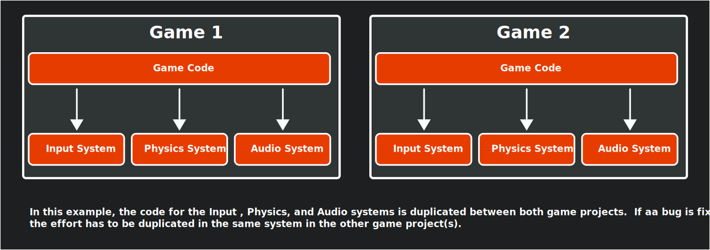
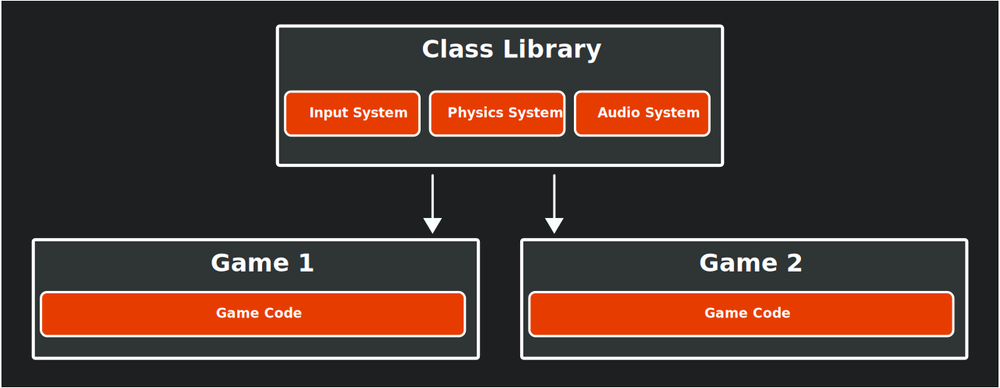
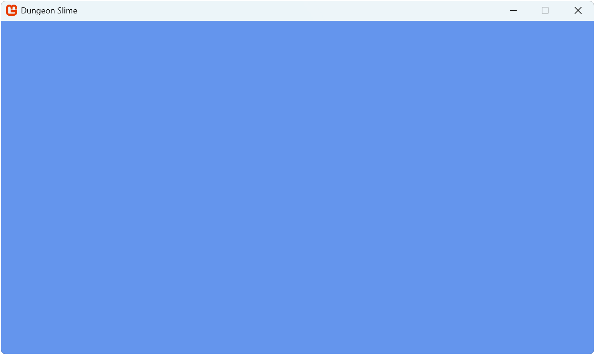

04: Creating a Class Library
Learn how to create and structure a reusable MonoGame class library to organize game components and share code between projects.
One of the goals of this tutorial is to create reusable modules that you can use to jump start your next game project after this. Rather than starting from scratch each time, we will build a collection of game components you can take with you from project to project.
In this chapter you will:
- Learn about class libraries and their benefits for game development.
- Create a MonoGame class library project using templates.
- Add library references to your game project.
- Structure your library for reusability.
- Set up the foundation for creating shared game components.
What Is a Class Library
Think of a class library like a toolbox for your game development. Just as a mechanic keeps their most-used tools in a toolbox they bring to every job, a class library stores code components you'll want to use in multiple game projects. Instead of recreating these tools for each new game (or copying and pasting code), you organize them in one place where they're easy to find, use, and improve over time.
The following diagrams show how this works:
|  |
|---|
| Figure 4-1: Diagram displays the block for Game 1 on the left and Game 2 on the right. In this example, when not using a class library, code for input, physics and audio systems are duplicated between both game projects. If a bug is fixed in one system, the effort has to be duplicated in the same system in other game projects |
|  |
|---|
| Figure 4-2: Diagram displays a block for a class library which contains common modules at the top, which are then shared between the two game projects below. If a bug is found in a module, fixing the bug will fix it across all game projects that use the class library |
Note
A class library is a project type that compiles into a Dynamic Link Library (DLL) instead of an executable. It contains reusable code that can be referenced by other projects, making it perfect for sharing common functionality across multiple games.
Why Create a Class Library?
Creating a class library offers several important advantages, especially as your games grow more complex:
- Reusability: Instead of rewriting the same code for each new game project, you build it once in your library and reuse it everywhere. This is like creating a multi-tool that works across all your projects.
- Organization: Your game code stays focused on the unique aspects of each game, while common functionality lives in the library. This keeps your project folder neat and makes code easier to find.
- Maintainability: When you improve or fix a bug in your library code, all games using that library benefit automatically. This means fixing one bug once instead of in multiple places.
- Testing: You can test your library code independently from any specific game. This helps ensure your core systems are solid before you build a game on top of them.
As your library grows, you'll accumulate a personal collection of well-tested modules that make starting new projects much faster. The modules we will create in this library will handle common game tasks like input, audio, sprites, and animations.
Adding the Class Library
MonoGame offers the MonoGame Game Library project template to add a new class library project that is configured with the correct monoGame framework references. Using this template saves time and ensures compatibility with MonoGame projects.
To use the template to add the class library, perform the following based on which development environment you are using:
To add the class library using the MonoGame Game Library project template in Visual Studio Code, perform the following:
- In the Solution Explorer panel, right-click the DungeonSlime solution.
- Chose New Project from the context menu.
- Enter "MonoGame Game Library" and select it as the template to use.
- Name the project "MonoGameLibrary".
- When prompted for a location, use the default option, which will put the new project in a folder next to your game project.
- Select "Create Project".
Adding a Reference To The Class Library
Now that the game library project has been created, a reference to it needs to be added in our game project. Without adding a reference, our game project will be unaware of anything we add to the class library. To do this, perform the following based on which development environment you are using:
To add the game library project as a reference to the game project in Visual Studio Code:
- In the Solution Explorer panel, right-click the DungeonSlime project.
- Choose "Add Project Reference" from the context menu.
- Choose *MonoGameLibrary" from the available options.
Tip
The Solution Explorer panel in VSCode is provided by the C# Dev Kit extension that was installed in Chapter 02. If you do not see this panel, you can open it by
- Opening the Command Palette (View > Command Palette).
- Enter "Explorer: Focus on Solution Explorer View" and select the command.
Clean Up
When using the MonoGame Game Library project template, the generated project contains file similar to a standard MonoGame game project, including a dotnet-tools.json manifest file, a Content.mgcb file, and a Game1.cs file. For the purposes of this tutorial, we will not need these. To clean these up, locate the following in the MonoGameLibrary project folder and delete them:
- The .config/ folder.
- The Content/ folder
- The Game1.cs file.
Tip
These files are needed in more advanced scenarios such as creating a central code base for game logic that is referenced by other projects of which each target different platforms such as desktop, mobile, and console. Creating a project structure of this type is out of scope for this tutorial.
If you would like more information on this, Simon Jackson has written the article Going cross-platform with MonoGame which covers this in more detail.
Creating Our First Library Module
Let's create a class for our library called Core. This class will extend the MonoGame Game class and provide a starting point for game development with some common functionality built in. Creating this will also let us validate that our class library reference setup was correct.
Create a new file called Core.cs in the MonoGameLibrary project and add the following code:
using System;
using Microsoft.Xna.Framework;
using Microsoft.Xna.Framework.Content;
using Microsoft.Xna.Framework.Graphics;
namespace MonoGameLibrary;
public class Core : Game
{
internal static Core s_instance;
/// <summary>
/// Gets a reference to the Core instance.
/// </summary>
public static Core Instance => s_instance;
/// <summary>
/// Gets the graphics device manager to control the presentation of graphics.
/// </summary>
public static GraphicsDeviceManager Graphics { get; private set; }
/// <summary>
/// Gets the graphics device used to create graphical resources and perform primitive rendering.
/// </summary>
public static new GraphicsDevice GraphicsDevice { get; private set; }
/// <summary>
/// Gets the sprite batch used for all 2D rendering.
/// </summary>
public static SpriteBatch SpriteBatch { get; private set; }
/// <summary>
/// Gets the content manager used to load global assets.
/// </summary>
public static new ContentManager Content { get; private set; }
/// <summary>
/// Creates a new Core instance.
/// </summary>
/// <param name="title">The title to display in the title bar of the game window.</param>
/// <param name="width">The initial width, in pixels, of the game window.</param>
/// <param name="height">The initial height, in pixels, of the game window.</param>
/// <param name="fullScreen">Indicates if the game should start in fullscreen mode.</param>
public Core(string title, int width, int height, bool fullScreen)
{
// Ensure that multiple cores are not created.
if (s_instance != null)
{
throw new InvalidOperationException($"Only a single Core instance can be created");
}
// Store reference to engine for global member access.
s_instance = this;
// Create a new graphics device manager.
Graphics = new GraphicsDeviceManager(this);
// Set the graphics defaults
Graphics.PreferredBackBufferWidth = width;
Graphics.PreferredBackBufferHeight = height;
Graphics.IsFullScreen = fullScreen;
// Apply the graphic presentation changes
Graphics.ApplyChanges();
// Set the window title
Window.Title = title;
// Set the core's content manager to a reference of hte base Game's
// content manager.
Content = base.Content;
// Set the root directory for content
Content.RootDirectory = "Content";
// Mouse is visible by default
IsMouseVisible = true;
}
protected override void Initialize()
{
base.Initialize();
// Set the core's graphics device to a reference of the base Game's
// graphics device.
GraphicsDevice = base.GraphicsDevice;
// Create the sprite batch instance.
SpriteBatch = new SpriteBatch(GraphicsDevice);
}
}
The Core class provides the following features
- It extends the MonoGame Game class, so it inherits all of the base functionality.
- It implements a singleton pattern through the
Instanceproperty, ensure only one core exists. - It provides static access to the graphics device manager, the graphics device, the sprite batch, and the content manager.
- It simplifies the game window setup with a constructor that handles common initializations.
Note
The new keyword in the property declaration public static new GraphicsDevice GraphicsDevice and public static new ContentManager Content is used to intentionally hide (or "shadow") the inherited GraphicsDevice and Content properties from the base Game class. This creates new properties with the same name but different accessibility (static vs. instance) in the derived class.
When you access Core.GraphicsDevice or Core.Content you'll be using this static properties, while base.GraphicsDevice or base.Content within instance methods of the Core class would still access the original property. This pattern allows us to provide convenient static access to the graphics device and content manager throughout our game without having to reference the Core instance every time.
This approach provides a consistent foundation for all our games, handling common setup tasks and providing convenient access to core functionality.
Note
As this tutorial progress, we will be coming back to this Core class to add more to it.
Updating Our Game to Use the Core Class
Now that we have our Core class, let's modify our game project to use it. Doing this will also help ensure that the project references were setup correctly.
Open the Game1.cs file and make the following changes:
using Microsoft.Xna.Framework;
using Microsoft.Xna.Framework.Graphics;
using Microsoft.Xna.Framework.Input;
using MonoGameLibrary;
namespace DungeonSlime;
public class Game1 : Core
{
public Game1() : base("Dungeon Slime", 1280, 720, false)
{
}
protected override void Initialize()
{
// TODO: Add your initialization logic here
base.Initialize();
}
protected override void LoadContent()
{
// TODO: use this.Content to load your game content here
}
protected override void Update(GameTime gameTime)
{
if (GamePad.GetState(PlayerIndex.One).Buttons.Back == ButtonState.Pressed || Keyboard.GetState().IsKeyDown(Keys.Escape))
Exit();
// TODO: Add your update logic here
base.Update(gameTime);
}
protected override void Draw(GameTime gameTime)
{
GraphicsDevice.Clear(Color.CornflowerBlue);
// TODO: Add your drawing code here
base.Draw(gameTime);
}
}
The key changes made here are:
- Adding
using MonoGameLibrary;directive to reference our library. - Removed the GraphicsDeviceManager and SpriteBatch fields, these are now supplied through the
Coreclass. - Changed
Game1class to inherit fromCoreinstead ofGame. - Updated the constructor to call the
Corebase constructor with our game configuration.
Running the game now will show the same window as before, only now it is at a 1280x720 resolution as per the configuration and it is using the Core class from our library. This may not seem like a big change visually, but it demonstrates how our library can simplify and standardize game initializations.
|  |
|---|
| Figure 4-3: The game window at 1280x720 with the title Dungeon Slime |
Important
If you receive an error stating that the following:
The type or namespace name 'Core' could not be found (are you missing a using directive or an assembly reference?)
This means either you forgot to add the using MonoGameLibrary; using directive to the top of the Game1.cs class file, or you did not add the project reference correctly. Ensure that the project reference was added correctly by revisiting the Add a Reference to the Class Library section above and that you added the using directive.
Conclusion
Let's review what you accomplished in this chapter:
- Learned about class libraries and their advantages for game development:
- Code reusability across projects
- Better organization and separation of concerns
- Improved maintainability
- Easier testing
- Created a MonoGame class library project
- Added the library as a reference to your game project
- Created your first reusable component and referenced and used it in the game project.
In the next chapter, we will learn about the Content Pipeline and how to load game assets.
Test Your Knowledge
What are the main benefits of using a class library for game development?
The main benefits are:
- Reusability: Code can be easily shared between different game projects
- Organization: Separates reusable code from game-specific code
- Maintainability: Changes to shared code benefit all games using the library
- Testing: Library code can be tested independently of specific games
Why should you use the MonoGame Game Library template instead of a standard class library template?
The MonoGame Game Library template automatically configures the correct MonoGame framework references and ensures compatibility with MonoGame projects, saving time and preventing potential setup issues.
What happens if you don't add a reference to your class library in your game project?
Without adding a reference, your game project will be unaware of any code in the class library. You won't be able to use any of the classes or components from the library in your game.